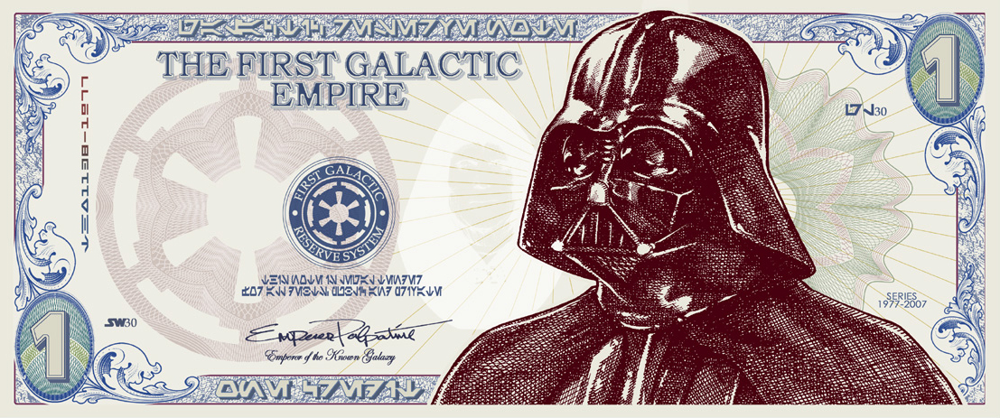

J'ai fait des études en communication visuelle option multimédia, à la base je voulais faire de la 3D en temps réel. Il n'y a pas besoin de se définir comme graphiste pour être UX designer.
Comment être UX designer ?
- Bac +2 à Bac +5
- Communication web ou communication visuelle
- Formations spécialisées
Évolutions possibles
Pour commencer dans ce domaine, une première expérience en web marketing ou en web design est conseillée. L'UX designer expérimenté peut devenir chef de projet, c'est le cas de Pierre Lainé qui est Lead UX design.
Rémunération
L'UX/ UI designer débutant peut gagner 2 500 € et son salaire peut avoisiner les 3 000 € à 3 500 € d'après le Centre d'Information et de Documentation Jeunesse
